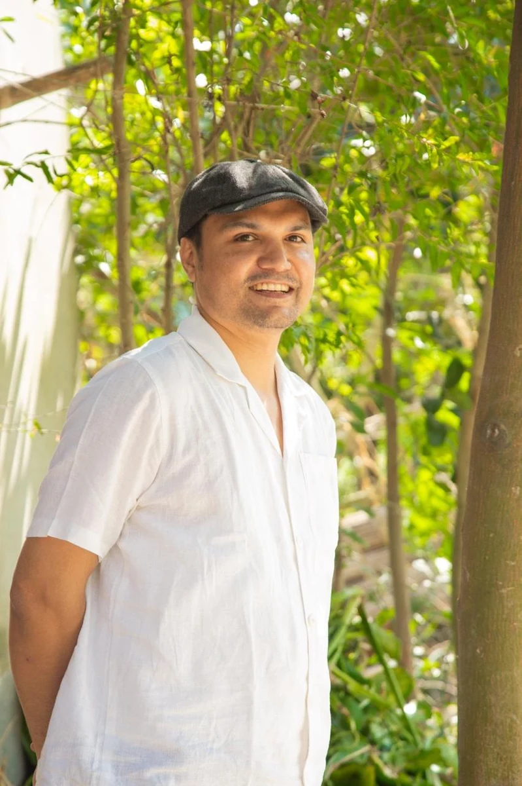
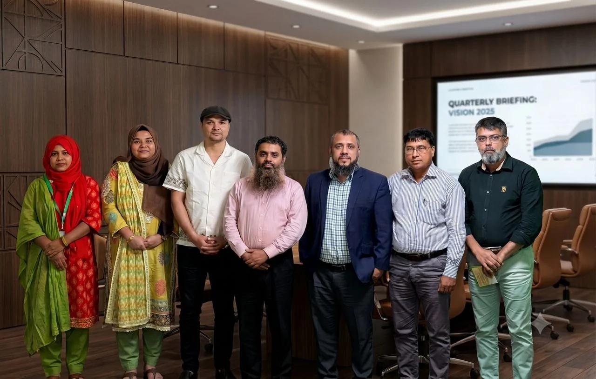

Inclusive & ethical finance
Soft Microfinance, financial inclusion and borrower-centred models designed around dignity and affordability.
Soft MicrofinanceDevelopment professional · Dhaka, Bangladesh
I’m ATM Ridwanul Haque, Founder and CEO of Agroho Society. I work to advance development that protects human dignity, strengthens self-reliance, and expands opportunities for people and communities. Through community development, inclusive finance, WASH, and public health, I seek to build more equitable systems where everyone can live with dignity, exercise their potential, and shape a better future.

People-centred development
Ethical finance
Evidence-led programmes
Collaborative impact
01 / About
A practical, partnership-led approach to inclusive and sustainable development.
ATM Ridwanul Haque is a development professional with more than 15 years of progressive experience in project design, implementation, monitoring and evaluation across poverty alleviation, WASH, microfinance, women’s empowerment, SME development, humanitarian aid and public health.
As the Founder and CEO of Agroho Society, he works at the intersection of grassroots needs and practical programme design. His work spans community health, clean water, menstrual hygiene management, women’s entrepreneurship and environmental sustainability. He pioneered the concept of Soft Microfinance, coining the term and developing a distinctive, human-centred financing model that reimagines the role of finance in human development. Grounded in dignity, affordability, and compassionate support, Soft Microfinance challenges conventional lending practices by putting people before profit and self-reliance before dependency. It offers a more humane and equitable approach to finance to overcome financial vulnerability, build sustainable livelihoods, and shape their own futures.
Throughout his career, he has collaborated with multidisciplinary teams, donor agencies, embassies, and international knowledge organisations to advance innovative, inclusive, and sustainable development.
02 / Focus areas
Core areas of expertise built through field implementation, programme leadership and applied research.
Soft Microfinance, financial inclusion and borrower-centred models designed around dignity and affordability.
Soft MicrofinanceRural sanitation, hygiene behaviour change, school WASH, sanitation markets and resource recovery.
WASHMobile hospital, access to primary healthcare for underserved and garment-worker communities, and hygiene education.
Public healthWomen-led enterprise development, menstrual health management (MHM) initiatives and community-centred economic participation.
Women EmpowermentDevelopment and migration issues, cross-sector coordination, partnerships and support for vulnerable communities.
ResilienceProject design, monitoring, evaluation and learning (MEL), results measurement, donor engagement and team leadership.
Learning & Strategy03 / Selected work
Programmes and ideas that reflect a focus on practical services, community agency and sustainable outcomes.

Agroho Society · Team collaborationOrganisational leadership
A multidisciplinary, Dhaka-based non-profit working across grassroots health, inclusive finance, water and environmental sustainability. Ridwanul Haque founded the organisation in 2018 and leads programme design, partnerships, implementation and organisational development.
Mobile healthcare services for garment-worker and underserved communities, including door-to-door visits, primary care and health awareness.
Water and hygiene including MHM interventions for communities and textile/RMG workers affected by water pollution, poor water quality, and water scarcity.
A welfare-financing model that emphasises borrower wellbeing, ethical lending, affordability and support services beyond credit alone.
Initiatives involving women’s entrepreneurship, menstrual hygiene management and plastic-waste recycling.
04 / Experience
Experience across non-profit leadership, programme management, learning and innovation
Agroho Society · Dhaka, Bangladesh
Founded and leads a multidisciplinary non-profit focused on grassroots development, including clean water, public health, inclusive finance, water justice and environmental sustainability.
BRAC · Bangladesh
Led school and rural WASH programme activities, covering hygiene behaviour change, water supply, sanitation, hygiene promotion and WASH credit.
05 / Education
Formal education paired with programme management and applied development practice.
BRAC University, Bangladesh
High DistinctionMilitary Institute of Science and Technology / Bangladesh University of Professionals
Admission TopperJahangirnagar University, Bangladesh
University Scholarship06 / Latest work & ideas
A dedicated space for new writing, current pilots, field learning and project updates. This section can be updated as new work is published.
Model development · Inclusive finance
Developing and piloting a welfare-oriented finance model that centres borrowers’ wellbeing, ethical lending, affordable service costs and broader social support.
Explore the published Soft Microfinance seriesCommunity health
Programme learning around practical access to health services for underserved communities and garment workers.
WASH · Circular systems
Past research and programme work examine sanitation supply chains and the potential for faecal-sludge-based organic fertiliser in Bangladesh.
Explore the IRC research recordThis is an editable starter section, not a live news feed. Update its cards in index.html whenever a new article, project or field note is ready to share.
07 / Publications & media
A selected record of WASH research, opinion writing and commentary on soft microfinance. Links open the original publisher or repository.
Co-authored study exploring rural sanitation demand, supply chains and the availability of products and services.
Conference contribution listed for the WASH 2014 Conference in Brisbane, Australia.
Research on the prospects for developing a viable process for faecal-sludge-based organic fertiliser.
Commentary on the economic and resource pressures associated with the Rohingya refugee influx in Bangladesh.
Introduces soft microfinance as a more humane, borrower-centred approach to financial inclusion.
Discusses borrower welfare, fair lending terms and support beyond credit alone.
Explores how the soft microfinance approach might be implemented in practice.
Argues for a shift toward a finance approach that puts borrower wellbeing and social outcomes first.
Opinion piece on empathetic lending and the welfare goals of soft microfinance.
বাংলা ভাষায় সফট মাইক্রোফাইন্যান্স ও কল্যাণভিত্তিক অর্থায়ন নিয়ে মতামত।
বাংলা ভাষায় সফট মাইক্রোফাইন্যান্সের ভূমিকা নিয়ে প্রকাশিত মতামতধর্মী লেখা।
Considers soft microfinance as a possible borrower-first alternative within financial inclusion.
Connects inclusive finance with the broader goal of fairness and economic dignity.
Highlights partnership and support systems as part of a welfare-oriented financial model.
Challenges profit-first assumptions and revisits the social purpose of microfinance.
Publication links were reviewed against the supplied list and publisher/repository pages where available. Publisher URLs and e-paper access may change over time; use the publisher link if an item does not open directly.
08 / Contact
For partnerships, programme discussions, speaking, research and professional enquiries, use the direct contact links below.